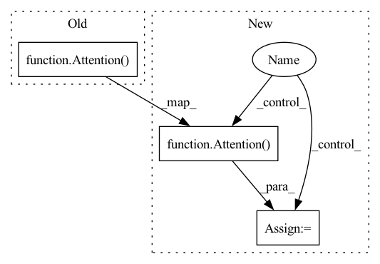

Pattern ID :17079

Before Change
self.layers = nn.ModuleList([])
for _ in range(depth):
self.layers.append(nn.ModuleList([
block_wrapper(Attention(dim = dim, dim_head = dim_head, heads = heads, dropout = attn_dropout)),
block_wrapper(FeedForward(dim = dim, mult = ff_mult, dropout = ff_dropout)),
]))
After Change
for idx in range(depth):
use_knn_attention = (idx + 1) in memorizing_layers
if use_knn_attention:
attn = KNNAttention(dim = dim, dim_head = dim_head, heads = heads, dropout = attn_dropout, num_retrieved_memories = num_retrieved_memories)
else:
attn = Attention(dim = dim, dim_head = dim_head, heads = heads, dropout = attn_dropout)
self.layers.append(nn.ModuleList([
block_wrapper(attn),
block_wrapper(FeedForward(dim = dim, mult = ff_mult, dropout = ff_dropout)),
In pattern: SUPERPATTERN
Frequency: 3
Non-data size: 3
Instances
Fragment ID: 57219961
Project Name: lucidrains/memorizing-transformers-pytorch
Commit Name: 2efd604bcf4adb00d205f88f5c5fedce34ececb8
Time: 2022-03-24
Author: lucidrains@gmail.com
File Name: memorizing_transformers_pytorch/memorizing_transformers_pytorch.py
M Class Name: MemorizingTransformer
N Class Name: MemorizingTransformer
M Method Name: __init__(1)
N Method Name: __init__(1)
M Parent Class: nn.Module
N Parent Class: nn.Module
M File Name: memorizing_transformers_pytorch/memorizing_transformers_pytorch.py
N File Name: memorizing_transformers_pytorch/memorizing_transformers_pytorch.py
M Start Line: 242
M End Line: 242
N Start Line: 247
N End Line: 260
'>
Before Change
for _ in range(depth):
self.layers.append(nn.ModuleList([
Residual(PreNorm(dim, Attention(dim = dim, heads = heads, dim_head = dim_head, dropout = attn_dropout))),
Residual(PreNorm(dim, FeedForward(dim = dim, dropout = ff_dropout)))
]))
After Change
self.layers = nn.ModuleList([])
shared_kv_proj = None
for _ in range(depth):
attn = Attention(dim = dim, heads = heads, dim_head = dim_head, dropout = attn_dropout)
ff = FeedForward(dim = dim, dropout = ff_dropout)
shared_kv_proj = default(shared_kv_proj, attn.to_kv)
attn.to_kv = shared_kv_proj
self.layers.append(nn.ModuleList([
Residual(PreNorm(dim, attn)),
'>
Fragment ID: 57219960
Project Name: lucidrains/feedback-transformer-pytorch
Commit Name: 8044063db1a5fc092c9ce68998dc1e301d9f7818
Time: 2021-02-02
Author: lucidrains@gmail.com
File Name: feedback_transformer_pytorch/feedback_transformer_pytorch.py
M Class Name: FeedbackTransformer
N Class Name: FeedbackTransformer
M Method Name: __init__(1)
N Method Name: __init__(1)
M Parent Class: nn.Module
N Parent Class: nn.Module
M File Name: feedback_transformer_pytorch/feedback_transformer_pytorch.py
N File Name: feedback_transformer_pytorch/feedback_transformer_pytorch.py
M Start Line: 192
M End Line: 204
N Start Line: 194
N End Line: 212
'>
Before Change
EinopsToAndFrom(
"b c l",
"b l c",
Attention(
features=channels,
num_heads=attention_heads,
head_features=attention_features,
),
)
if use_attention
else nn.Identity()
After Change
if use_attention:
assert exists(attention_heads) and exists(attention_features)
self.attention = EinopsToAndFrom(
"b c l",
"b l c",
Attention(
features=channels,
num_heads=attention_heads,
head_features=attention_features,
),
)
self.post_block = ResnetBlock1d(
'>
Fragment ID: 57219965
Project Name: archinetai/audio-diffusion-pytorch
Commit Name: 67e9fd7b2dbb371fc606ed48550825a03fd0e507
Time: 2022-07-21
Author: flavio.schneider.97@gmail.com
File Name: audio_diffusion_pytorch/models.py
M Class Name: BottleneckBlock1d
N Class Name: BottleneckBlock1d
M Method Name: __init__(0)
N Method Name: __init__(0)
M Parent Class: nn.Module
N Parent Class: nn.Module
M File Name: audio_diffusion_pytorch/models.py
N File Name: audio_diffusion_pytorch/models.py
M Start Line: 930
M End Line: 941
N Start Line: 930
N End Line: 942